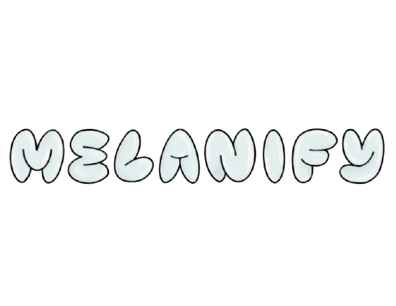
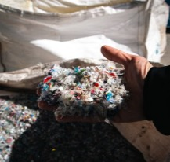
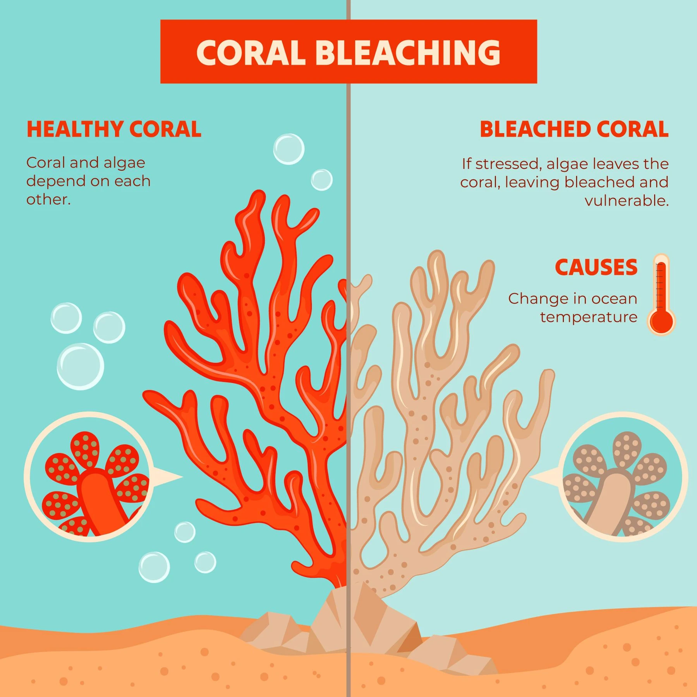
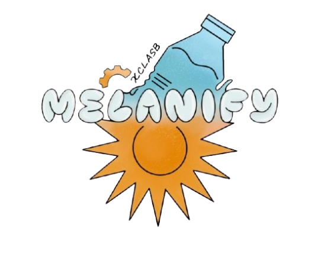
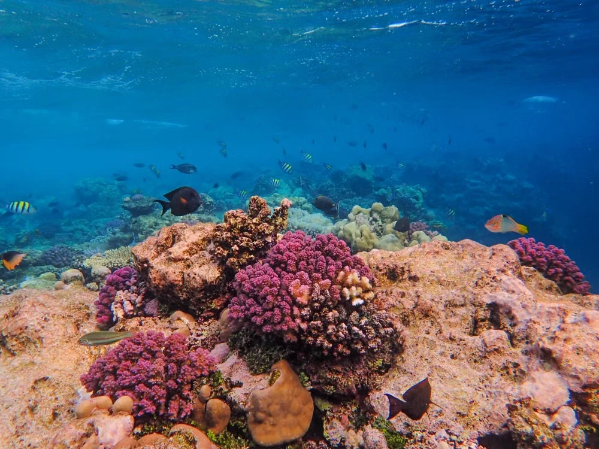
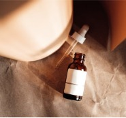

1.8M+ Tons
Annual PET & plastic waste generated in Thailand. [1]
PLASTIC POLLUTION / 01
What if the plastic we leave behind could help protect what lies ahead?
What if the plastic we leave behind could help protect what lies ahead?
Discover MELANIFYWhy mechanical recycling and current sunscreens fall short.

Mechanical recycling breaks down plastic’s molecular structure, causing it to lose strength and quality after every cycle. This forces most recycled PET into lower-value products, like carpets and textiles, that eventually end up in landfills anyway, while chemical upcycling remains costly and energy-intensive.

Synthetic chemical UV filters can damage coral and marine ecosystems, triggering government restrictions. Mineral alternatives, such as ZnO and TiO₂, require mining and processing, can be expensive, and may leave an undesirable white cast on the skin, limiting consumer adoption.

FROM PET WASTE TO A NEW POSSIBILITYWe developed an integrated dual-host bioconversion pathway designed to transform post-consumer PET plastic waste into allomelanin. MELANIFY explores sustainable UV photoprotection by directly connecting plastic degradation to biomaterial synthesis.
Read full project descriptionThe material properties and environmental goals guiding our research.

Our goal is a biodegradable, non-nano biomaterial that replaces chemicals such as oxybenzone and protects human skin while respecting marine ecosystems.
Transforms uncollected PET plastic bottles into a high-value pigment, diverting persistent plastic pollution from Thai rivers and oceans into a closed-loop economic model.

Combines broad-spectrum light extinction with free-radical scavenging capabilities, with the aim of enhancing UV protection and reducing oxidative stress.
Dive into our iterative Design-Build-Test-Learn cycles, enzyme characterizations, and expression models behind the six-step MELANIFY pathway.
Explore Our EngineeringTo convert persistent plastic waste into photoprotection, MELANIFY uses a dual-host synthetic pipeline dividing PET monomer degradation and allomelanin synthesis between Pichia pastoris and Escherichia coli. Explore our iterative Design-Build-Test-Learn cycles, plasmid construction, and quantitative assay results.
Dive into our iterative DBTL design cycles, genetic construct validation, and experimental assay data across both host chassis.
Explore Wet Lab & Engineering → 02 / RESPONSIBLE RESEARCHDiscover our biocontainment protocols, dual-host organism risk assessment, and lab safety measures.
View Safety Protocols →Explore our project description, dual-host pipeline, and design.
02Dive into engineering cycles, results, parts, and safety protocols.
03See how stakeholder feedback, education, and market analysis shaped us.
04Meet the students and advisors behind MELANIFY and view attributions.